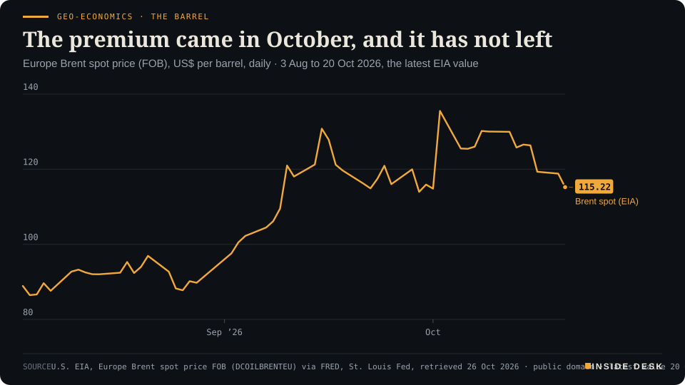
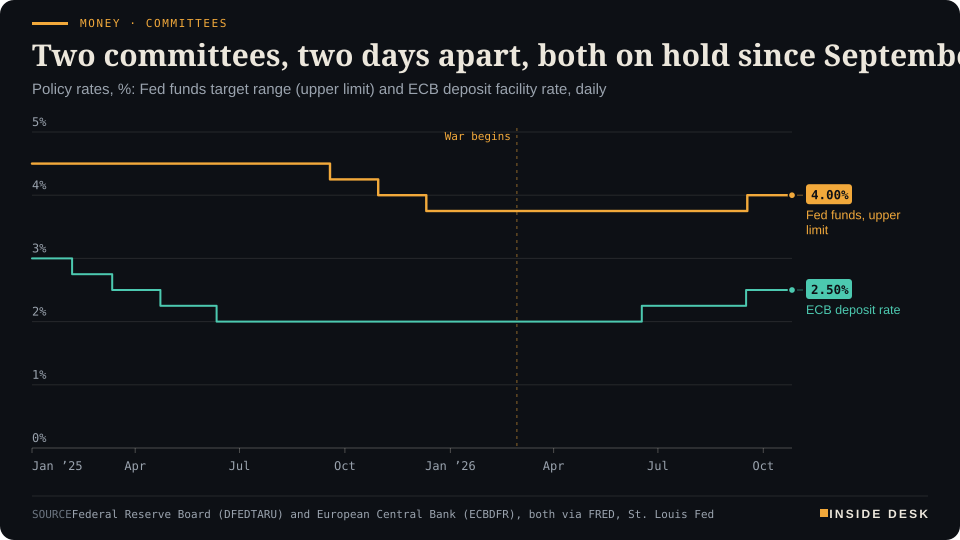

Inside Desk ePaper, Evening ePaper · Mon 26 Oct 2026
Monday, 26 October 2026Always free
Inside Desk
Evening ePaperPublished 17:59 CET · Berlin
Lead · Geo-economics
Saudi Arabia, Pakistan and Turkey sat down with Iran's leaders on Monday. The Houthis said they hit the East-West pipeline again. Brent eased about 1.6%, which is what a meeting is worth before anything is signed.
Saudi Arabia, Pakistan and Turkey sat with Iran's leaders in Tehran while the Houthis claimed another pipeline strike; Brent gave back about 1.6%. The ifo rose for a sixth month, Brazil's loser filed his complaint, and the Rhine climbed to 55 cm. Eleven desks, every number sourced.
Geo-economics · The barrelThe premium came in October, and it has not leftEurope Brent spot price (FOB), US$ per barrel, daily · 3 Aug to 20 Oct 2026, the latest EIA value

Line chart of the daily Europe Brent spot price from 3 August to 20 October 2026, in US dollars per barrel. It starts at $88.90 on 3 August, with the period low of $86.47 on 4 August, climbs through September to a peak of $135.51 on 2 October, and stands at $115.22 on 20 October, the latest value published by the EIA. Futures prices quoted on 26 October are not part of this series.
Source: U.S. EIA, Europe Brent spot price FOB (DCOILBRENTEU) via FRED, St. Louis Fed, retrieved 26 Oct 2026 · public domain · latest value 20 Oct 2026 · CSV
Markets & Macro · p. 6
Energy & Industry · p. 10
Climate & Weather · p. 16
The day in one sentenceNeighbours sat down in Tehran, German factories got more orders, and the Rhine rose; none of it is finished, all of it is moving the right way.
ContentsInside Desk · Evening ePaper26 October 2026
Saudi Arabia, Pakistan and Turkey sat with Iran's leaders in Tehran while the Houthis claimed another pipeline strike; Brent gave back about 1.6%. The ifo rose for a sixth month, Brazil's loser filed his complaint, and the Rhine climbed to 55 cm. Eleven desks, every number sourced.
11 edition pieces · 11 desks · Published 17:59 CET, 26 October 2026
19 ePaper extras, added , 26 October. They appear only in the ePaper and carry their own time.
17:30 Evening ePaper, updated live until 22:30 with an “Updated” time and a Latest page
Sun 10:00 The Sunday Magazine
Berlin time. Every issue is free.
How to read it
Swipe, use the arrow keys or the page strip. Tap any headline for the reading view. Press / to search, t for contents, +/− to zoom. Download the PDF.
LatestInside Desk · Evening ePaper26 October 2026
Latest
Live: this page and the issue are updated until 22:30 Berlin time.
Markets: New York closes higher on Anthropic's prospectus; Meta and SpaceX raise money for AI; Brazilian listings fall
Geoecon: Tehran's joint statement promises more talks; Iran resubmits a seven-day plan for the straits
LeadInside Desk · Evening ePaper26 October 2026
Geo-economics · Lead · 2 min
Saudi Arabia, Pakistan and Turkey sat down with Iran's leaders on Monday. The Houthis said they hit the East-West pipeline again. Brent eased about 1.6%, which is what a meeting is worth before anything is signed.
On Monday the defence minister of Saudi Arabia, Prince Khalid bin Salman, Pakistan’s army chief, Field Marshal Asim Munir, and Turkey’s intelligence chief, Ibrahim Kalin, met Iran’s top security officials and negotiators in Tehran1. Iranian state television showed the Pakistani delegation sitting with President Masoud Pezeshkian and Foreign Minister Abbas Araghchi2. Saudi Arabia’s deputy minister for public diplomacy, Rayed Krimly, called it part of the Makkah Defence Alliance’s efforts “for de-escalation”, in support of the mediation by Qatar and Pakistan2.
It is the first high-level contact between Iran and all three members of that alliance since Saudi Arabia was drawn deeper into the conflict2. That is the news. The rest is a list of things that have not happened yet.
What the room was for. Iran’s foreign ministry spokesman, Esmaeil Baqaei, said the “top priority” was the consequences of what Tehran calls the US-Israeli aggression2. AP reports that many Iranians are anxious about a return to all-out war, as Israeli and American leaders sharpen their threats before elections in both countries1. Four delegations in one room do not make a ceasefire. They do make a channel, and channels are dull, slow and the only thing that has ever ended a war.
What the desert did. While the delegations met, the Houthis said they had struck pumping stations on Saudi Arabia’s East-West crude pipeline and Riyadh airport; Saudi Arabia did not immediately confirm damage4. The pipeline matters because it is the route around the straits: it carries Saudi crude to the Red Sea coast. It was shut for a time in September after drone attacks on pumping stations, then resumed4. Saudi Arabia said on Sunday it had intercepted more missiles and drones3.
What the barrel said. Brent futures fell $1.90, or 1.63%, to $114.82 by 09:59 GMT, after a week in which Brent rose 6%3. CNBC had it at $115.86 by mid-morning New York time5. That is a modest discount for a meeting, on top of what one investment chief told CNBC is a risk premium of “about $20 a barrel”5. A PVM analyst put the trader’s view plainly: dips back to last week’s lows “will find grateful buyers”3.
Geo-economics · The barrelThe premium came in October, and it has not leftEurope Brent spot price (FOB), US$ per barrel, daily · 3 Aug to 20 Oct 2026, the latest EIA value
Line chart of the daily Europe Brent spot price from 3 August to 20 October 2026, in US dollars per barrel. It starts at $88.90 on 3 August, with the period low of $86.47 on 4 August, climbs through September to a peak of $135.51 on 2 October, and stands at $115.22 on 20 October, the latest value published by the EIA. Futures prices quoted on 26 October are not part of this series.
Source: U.S. EIA, Europe Brent spot price FOB (DCOILBRENTEU) via FRED, St. Louis Fed, retrieved 26 Oct 2026 · public domain · latest value 20 Oct 2026 · CSV
What the official series says. The EIA’s daily Brent spot price, the public-domain record, peaked at $135.51 on 2 October and stood at $115.22 on 20 October, its latest published value6. It lags the futures by several days, so read the chart as the shape of the autumn, not as today’s price. The shape is the point: the premium arrived in late September and has eased, not disappeared.
The ledger view. Saudi Arabia also said on Monday it will start storing crude in Singapore from the second half of 20275. That is not a headline about war. It is a headline about inventory, which is what serious people do when they expect the next disruption to be ordinary. Storage contracts, pipeline repairs and insurance policies outlast speeches. So, usually, do the meetings that produce nothing on the first day.
Nothing here is investment advice.
Geo-economicsInside Desk · Evening ePaper26 October 2026
Saudi Arabia will keep oil in storage near its Asian customers. It is the quietest strategic decision of the day.
Saudi Arabia will start storing crude oil in Singapore from the second half of 2027, energy ministers from both countries said on Monday, to shore up the resilience of supply in the region1.
It is a modest sentence with a long logic behind it. The war that began at the end of February has disrupted shipping through both the Strait of Hormuz and Bab el-Mandeb, and October has been the worst month for attacks on commercial shipping in those waters, according to data compiled by the Washington Institute for Near East Policy and cited by Reuters2. A barrel already sitting in Singapore does not need to pass a strait when a refinery calls.
Storage is not glamorous. It costs money every month and earns nothing until the day it is needed. That is exactly why it is a better indicator of what producers expect than any statement: they are paying, in advance, for the next disruption to be survivable.
Geo-economics · Short item · ePaper extra, added
Tehran's four-way meeting ended with a joint statement. It promises more talking and names no date. Beside it, Iran put a staged plan for the straits back on the table, with conditions attached.
This evening’s edition asked whether anything written would come out of Tehran. Something did. The joint statement calls Monday’s talks “the first meeting” of the four countries, and says the participants “agreed to continue the dialogue”, including for peace and security in the region1. Anadolu reports that the agenda covered regional security, Israel’s activities, and Palestine and Lebanon2. The published text names no date for a second round1.
The more practical line came from beside the room. According to Iranian state outlets, Tehran has resubmitted, after technical talks in Doha, a plan to reopen shipping through the Strait of Hormuz in stages over seven days3. Its foreign ministry spokesman said Iranian negotiators were studying US counterproposals on lifting the naval blockade3. Tehran’s condition is that the seven days do not start until $24 billion in foreign reserves is fully accessible and container clearance at Bandar Abbas is freed3.
A statement that promises more meetings is modest. A plan with a clock, a sum and a port in it is something a clerk can check. Watch for the second meeting’s date and for any reply on the sequence, not for adjectives. Nothing here is advice.
Geo-economics · Brief · ePaper extra, added
Audi plans to invest about $4 billion in its first US manufacturing plant, in Georgia, with around 4,500 jobs, according to Volkswagen1. Construction is due to start in 2027 and production in the early 2030s, with capacity for up to 200,000 premium SUVs a year for North American buyers1. Desk observation: a factory that opens in the 2030s is a bet on the market, not on any one administration. That is how trade policy is really answered.
Markets & MacroInside Desk · Evening ePaper26 October 2026
Markets & Macro · Podium vs Print · 2 min
The ifo president says the recovery is continuing. The ifo's own index of the current situation fell. Both are in the same release, and both are true.
Podium
“Die Konjunkturbelebung setzt sich fort.”
Clemens Fuest, president of the ifo Institute, quoted by tagesschau, 26 October 2026
Print88.8
The index of the current business situation, down from 89.5 in September. Expectations rose to 91.6, the climate to 90.2.
ifo Business Climate Germany, October 2026, Published 26 October 2026
“The recovery is continuing,” said Clemens Fuest, in the sentence every news agency used2. The ifo business climate rose for the sixth month in a row, to 90.2 points from 89.9, its highest since spring 2023, and above the 89.9 analysts had expected1,2.
The print underneath. The climate is an average of two questions. Firms’ expectations for the next six months rose to 91.6 from 90.4. Their assessment of business right now fell to 88.8 from 89.51. The headline rose on hope; the present slipped.
Where it is real. Manufacturing is the good news, and it is specific. Its balance turned positive, at +1.2, for the first time in more than three years; incoming orders rose and firms plan to expand production1. Services went the other way, to −1.2 from +0.7, with IT services the exception1. Trade was stuck at −17.2, construction improved to −15.51.
The cautious reading. One bank analyst, Klaus Bauknecht of IKB, told tagesschau the survey shows no sign of a sustained investment upswing2. That is the right footnote. Orders are rising; capital spending is not yet in the numbers.
The market. The DAX closed up 0.63% at 25,341.54; the CAC 40 fell 0.36% and Spain’s IBEX 0.73%3. Nothing here is investment advice.
Markets & Macro · Short item · ePaper extra, added
Spanish and Portuguese shares, with large Brazilian exposure, slipped after the vote. The DAX's best performer was a turbine maker.
Dow Jones reported on Monday that Spanish and Portuguese shares were weighed down after the result in Brazil, where many of their listed companies earn money1. Spain’s IBEX 35 closed 0.73% lower at 18,850.302.
In Frankfurt the story was different. By midday Siemens Energy had gained 3.9% and led the DAX, followed by Hochtief at 3.3%; Infineon rose 2.7% and Aixtron 2.9% as the AI-related names recovered1. The DAX closed 0.63% higher at 25,341.542.
The pairing says something useful. Markets react to elections in hours, and to order books over months. A turbine maker’s gain is about contracts already signed; a bank’s loss on Brazil is about a complaint not yet heard. Nothing here is investment advice.
Markets & MacroInside Desk · Evening ePaper26 October 2026
Markets & Macro · Short item · ePaper extra, added
New York closed higher on an AI company's filing. The more useful numbers sat beside it: who is borrowing for the chips, and what Brazilian listings paid for Sunday.
New York finished Monday higher. The S&P 500 rose 0.7% to 7,676.77 and the Nasdaq Composite 0.82% to 26,169.38, after Anthropic published its prospectus for a Nasdaq listing under the ticker “ANT”1. The filing shows $16.29 billion of revenue for the six months to June, against $1.16 billion a year earlier1.
The invoices beside it. Meta said it plans to raise $95 billion for its AI investments, and Elon Musk said SpaceX has closed $40 billion of debt for AI chips1. Chipmakers rallied, yet the iShares semiconductor fund is still roughly 25% below its high1. Brent settled 0.8% lower at $115.81 a barrel1.
The other side of the board. US-listed Brazilian shares paid for Sunday’s result. Petrobras fell 21% before the open, and the iShares MSCI Brazil fund dropped nearly 20% overnight before paring the loss to 18%1.
This evening’s edition asked who pays for the buildings. Tonight’s partial answer: new shareholders and lenders, in sums now written down. Futures put the chance of the Fed holding at 3.75–4% on Wednesday at about 90%, the same evening Alphabet and Microsoft report1. That is where the bills get read. Nothing here is investment advice.
Markets & Macro · Brief · ePaper extra, added
The US ten-year Treasury yield edged up to 5% by Monday midday, Dow Jones reported, while the French ten-year fell below 5% after Moody’s held the country’s rating1. The official H.15 series shows 4.96% for Thursday, 22 October, its latest value2. For once, Paris borrowed for ten years at about the same price as Washington. That is less a compliment to either than a reminder of what a decade of debt costs everyone. Nothing here is investment advice.
Politics & InstitutionsInside Desk · Evening ePaper26 October 2026
Politics & Institutions · 2 min
Lula won with 51.79%. Flávio Bolsonaro wants the vote annulled over a two-hour extension both campaigns had asked for in some form. The institutions now do the slow part.
Brazil’s Superior Electoral Court has Luiz Inácio Lula da Silva at 51.79% and Flávio Bolsonaro at 48.21%, a margin of about 4.4 million votes3. AP reports Lula persuaded some 10 million additional voters between the rounds, and is due to take office for a fourth, non-consecutive term on 5 January 20271.
The complaint. Bolsonaro said what happened on Sunday “was not normal” and called for the result to be annulled2. His objection is a decision by Supreme Court justice Cristiano Zanin to extend voting nationwide by two hours2. Lula’s campaign had asked for the extension, citing voter transport problems; Bolsonaro’s campaign had asked for extra time too, but only in municipalities in five states hit by rain, floods and power cuts2.
The rest of the world. The EU, Mexico, Canada and Russia sent congratulations; Canada’s Mark Carney wrote of “new promising commercial prospects”4. Donald Trump and Argentina’s Javier Milei had not publicly reacted by Monday, BBC Brasil reported5; Donald Trump Jr criticised the extension4.
The sequence is the familiar one: a count, a complaint, a court. Brazil has run it before: Jair Bolsonaro also refused to concede in 20222. The dull machinery usually wins when it is allowed to finish.
Politics & Institutions · Short item · ePaper extra, added
The coalition promised that every constituency winner gets a seat without the Bundestag growing again. Its working group has not found how.
Germany’s coalition agreed to change the electoral law so that every candidate who wins a constituency also gets a seat, while keeping the Bundestag at 630 members, down from 7361. So far, the coalition’s working group has found no alternative to the system introduced under the previous government, tagesschau reports, and Chancellor Friedrich Merz says the coalition is a year behind1.
The stakes are concrete. After the last federal election, 23 constituency winners could not take their seats, most of them from the CDU and CSU1. The CSU and the Left, unusually, agree on the complaint1.
The deadline is administrative, which is why it is real. Constituency boundaries have to be redrawn, with the Länder involved, before the next election, and that takes time, as Merz put it: “Das ist ein aufwändiger Prozess”1. Electoral law is the most boring law a democracy has. It is also the one everybody else depends on.
Ursula von der Leyen called Lula’s win a victory for “democracy and multilateralism”, and António Costa congratulated him for the European Council1. Vladimir Putin sent a message through the Kremlin1; Mexico’s Claudia Sheinbaum and Canada’s Mark Carney posted their congratulations2. Donald Trump and Javier Milei had not reacted publicly by Monday, BBC Brasil reported1. Recognition is a diplomatic form, not a legal one: Brazil’s courts, not foreign capitals, settle the complaint.
Psychology & BehaviourInside Desk · Evening ePaper26 October 2026
Psychology & Behaviour · 2 min
In the APA's annual survey, 77% of US adults name the cost of living as a significant source of stress. The economy is second, money third. Worry has become an accounting category.
The American Psychological Association’s Stress in America report for 2026 found that 77% of US adults call the cost of living a significant source of stress, 74% the economy and 71% money1. The survey covered 3,132 adults online between 29 July and 24 August 20261. A health-policy commentator read it on Monday as stress becoming “the new normal”2.
The reading. The three top answers are one answer in three coats. They are about prices, and they come from a year of war-priced oil. The report’s title is about uncertainty, which is the right word: the bill you cannot predict is heavier than the bill you can.
The European contrast. Monday’s ifo survey shows German firms more hopeful about the next six months than about today: expectations at 91.6, the current situation at 88.83. Firms can see their order books. Households mostly see the receipt. Those two moods meet, eventually, in payrolls.
A survey is not a diagnosis. It is, though, a useful reminder that the remedy for worry about prices is rarely a speech. It is a predictable bill.
Psychology & Behaviour · Short item · ePaper extra, added
German firms' expectations rose to 91.6, their view of the present fell to 88.8. That gap is a mood, not yet a fact.
The ifo survey asks about 9,000 firms two questions: how is business now, and how will it be over the next six months1. In October the answers moved apart. The expectations index rose to 91.6 from 90.4; the current situation fell to 88.8 from 89.51.
Desk arithmetic: expectations now stand 2.8 points above the present. In April the order was reversed, with expectations at 83.9 below a situation of 85.41. Firms were then gloomier about the future than about the present; now they are more hopeful.
Psychologically that is the healthier gap. It is also the one that has to be paid for: if orders keep arriving, the present catches up; if they do not, expectations fall back to meet it. Manufacturing, where incoming orders rose, is where the hope has the best collateral1.
Energy & IndustryInside Desk · Evening ePaper26 October 2026
Energy & Industry · 2 min
The Houthis say they hit East-West pumping stations; Riyadh has not confirmed damage. Washington lent 400,000 barrels to one refinery. Saudi Arabia will store crude in Singapore from 2027. German power is back at €116.57.
The Houthis said on Monday they attacked pumping stations on Saudi Arabia’s East-West crude pipeline and Riyadh airport1. Saudi Arabia did not immediately confirm the attacks or any damage1. The pipeline, which takes crude from the Gulf side to the Red Sea, was shut for a time in September after drone strikes on pumping stations and then resumed1.
The reserve. In the US, the Energy Department said on Friday it had authorised a release of 400,000 barrels from the Strategic Petroleum Reserve, to cover a supply disruption at a Louisiana refinery2. That is a small, targeted loan, which is exactly what a reserve is for.
The tank. Saudi Arabia will start storing crude oil in Singapore from the second half of 2027, the two countries’ energy ministers said on Monday, to make supply in the region more resilient2. Inventory near the customer is the oldest insurance in the trade.
The socket. In Germany, the day-ahead power price averaged €116.57 per megawatt hour for delivery on Monday, after €13.12 on storm-blown Sunday and €30.12 on Saturday3. The wind fell; the price remembered gas. Nothing here is advice.
Energy & Industry · Short item · ePaper extra, added
One investment chief puts the war premium at about $20 a barrel, and sees demand giving way if Brent goes past $120. The longer worry is refineries.
Michael Alfaro, chief investment officer at Gallo Partners, told CNBC on Monday that the risk premium in oil is “about $20 a barrel”1. A substantial strike on Saudi Arabia’s East-West pipeline or on refining infrastructure could send prices sharply higher, he said, but further gains would eventually weaken consumption, with more demand destruction setting in above $120 a barrel for Brent1.
The more durable point in the same report is about refining. Damage to refineries could become a longer structural problem, extending into 2027 and beyond1. Crude can be rerouted; a refinery cannot be rebuilt in a month.
Prices are a conversation between producers and buyers. When buyers start driving less, heating less and ordering later, they are answering. That is not a forecast, just how invoices behave. Nothing here is investment advice.
Energy & Industry · Brief · ePaper extra, added
German onshore wind generated 1,009,162 MWh on Saturday and 1,019,966 MWh on Sunday, against 242,281 MWh last Wednesday, according to SMARD1. The day-ahead price followed: €30.12 on Saturday, €13.12 on Sunday and €116.57 for Monday1. Desk arithmetic: Monday’s average is almost nine times Sunday’s. Wind is cheap when it blows and silent about tomorrow, which is why the grid still keeps everything else on standby.
Money, FX & CommitteesInside Desk · Evening ePaper26 October 2026
Money, FX & Committees · 2 min
The Fed meets on Tuesday and Wednesday, the ECB decides on Thursday. Both have held since September. Moody's kept France at Aa3, and the French ten-year slipped below 5%.
The Federal Reserve’s committee meets on 27 and 28 October1. The ECB’s Governing Council announces its decision on Thursday, 29 October. Both arrive on hold: the Fed’s upper limit has been 4.00% since September, the ECB’s deposit rate 2.50% since September2.
Money · CommitteesTwo committees, two days apart, both on hold since SeptemberPolicy rates, %: Fed funds target range (upper limit) and ECB deposit facility rate, daily

Step chart since January 2025 of the Fed funds target upper limit and the ECB deposit rate. The Fed's upper limit falls from 4.50% to 3.75% between September and December 2025, then rises to 4.00% in September 2026. The ECB deposit rate falls from 3.00% to 2.00% by June 2025, rises to 2.25% in June 2026 and to 2.50% in September 2026. Both are unchanged since September; the latest values, for 26 October 2026, are 4.00% and 2.50%. The Fed meets on 27–28 October and the ECB decides on 29 October.
Source: Federal Reserve Board (DFEDTARU) and European Central Bank (ECBDFR), both via FRED, St. Louis Fed · CSV
The expectation. Previews broadly expect the ECB to hold at 2.50%; one market-pricing tracker put the chance of an October rise at about 3%, and Morgan Stanley sees December, when new staff projections arrive, as the “natural moment” for the next move3. A forecast is not a decision. The chart shows only what was decided.
The relief. Moody’s has kept France at Aa3, citing a diversified economy and strong public institutions despite rising debt and a fragmented parliament4. The French ten-year yield fell below 5% on Monday morning4. That is the most useful thing a rating agency can say about a country: the institutions still count.
Nothing here is investment advice.
Money, FX & Committees · Short item · ePaper extra, added
Previews expect the ECB to leave the deposit rate at 2.50%. The argument is about the sentence after.
The ECB raised its deposit rate by a quarter point in September, to 2.50%, and previews now broadly expect it to hold on Thursday1. Market pricing gives an October rise only a small chance; Morgan Stanley calls December, when the staff publish new projections, the “natural moment” for any next step1. ING argues that rising bond yields favour a hold, because they already tighten financing conditions2.
That last point is the one to keep. A central bank does not only set one rate; it watches the rates everyone else charges. When long yields rise by themselves, part of the committee’s work is done for it.
So the decision itself is likely the least informative part of Thursday. The sentences after it, about energy, wages and those yields, are where the next move will be written. Nothing here is investment advice.
Ordinary & Inherited LifeInside Desk · Evening ePaper26 October 2026
Ordinary & Inherited Life · 2 min
Heating oil edged up 24 cents per 100 litres between Monday morning and afternoon on the German average, although Brent fell. The exchange reaches the tank a day late.
The German average for 100 litres of heating oil stood at €174.58 on Monday afternoon, for a standard order, according to HeizOel241. That is €3.94 more than a week ago and €41.03 more than three months ago1. This morning the same page showed €174.34. Brent, meanwhile, fell more than 1.5% during the day2.
The ledger. Desk arithmetic: a 3,000-litre delivery at the afternoon average costs about €5,237, roughly €7 more than at breakfast and about €1,231 more than three months ago. A detached house uses 2,000 to 3,000 litres a year, by the portal’s rule of thumb1.
The lag. A cheaper barrel does not make a cheaper tank on the same day. Taxes, the CO₂ levy, the dollar and dealers’ margins sit between them, and the portal itself rates the moment to buy as “ungünstig”, unfavourable1. An order is binding, and the price holds until delivery in two to four weeks1.
Nothing here is advice.
Ordinary & Inherited Life · Brief · ePaper extra, added
HeizOel24 says a detached house uses about 2,000 to 3,000 litres of heating oil a year, about 15 litres per square metre, with 10 to 20% of it going on hot water1. Desk arithmetic at Monday afternoon’s average of €174.58 per 100 litres: 2,000 litres cost about €3,492 and 3,000 litres about €5,237. Your own meter reading beats any rule of thumb. Nothing here is advice.
Tech & ComputeInside Desk · Evening ePaper26 October 2026
Tech & Compute · 2 min
About 160 S&P 500 companies report this week. The question for the hyperscalers is not whether AI demand exists. It is who pays for the buildings.
Alphabet and Microsoft report after the US close on Wednesday; Amazon and Intel after the close on Thursday1. Around 160 S&P 500 companies report this week, and about 83% of those that reported by Friday beat earnings expectations, according to FactSet data cited by CNBC1.
The receipt that came first. Meta reported last week: revenue up 26%, but capital spending of $34.91 billion in the quarter turned free cash flow negative, and the shares fell nearly 7%2. That is the template for this week. The demand is real; the question is the bill.
What analysts are watching. For Alphabet, revenue growth of about 25% is expected, after last quarter’s raised capex forecast in a “supply-constrained environment”1. For Microsoft, Azure’s pace1. For Intel, analysts expect revenue growth of about 20.5%1.
At home. In Monday’s ifo survey, German IT service providers were the bright spot of an otherwise weaker services sector3. Data centres need electricians and invoices as well as chips. Nothing here is investment advice.
Tech & Compute · Short item · ePaper extra, added
Intel reports on Thursday. The line analysts keep quoting is about shortage, not hype.
Intel reports after the US close on Thursday, alongside Amazon1. Last quarter it posted its highest quarterly revenue growth since 2011; this time analysts expect revenue up about 20.5% and earnings per share up about 70% on the year, according to LSEG data cited by CNBC1.
UBS analyst Timothy Arcuri noted that Intel said “demand continues to run ahead of supply”1. That is the most interesting sentence of the AI season, because it is about factories, not models. Shortage is a physical fact. It shows up in delivery times and prices, and it is resolved by capacity, which takes years.
For Amazon, Jefferies says AWS “is not yet done accelerating”1. Both claims will meet their invoices on Thursday evening. Nothing here is investment advice.
Health & CareInside Desk · Evening ePaper26 October 2026
Health & Care · 2 min
The 24 October bulletin puts the Bundibugyo outbreak at 9,964 confirmed cases. The daily average is rising again. Nord-Kivu is over capacity.
The Congolese bulletin for 24 October reports 88 new confirmed cases and 38 deaths, taking the outbreak to 9,964 confirmed cases and 4,841 deaths, a case fatality rate of 48.6%1. Over the past seven days the average was 72.7 cases and 40.0 deaths a day, against 68.1 and 32.1 the week before1.
Where. Ituri reported 44 of the new cases, Nord-Kivu 39 and Haut-Uélé 51. No new health zone has been affected since 16 October; the outbreak stays in 66 zones across eight provinces1. WHO’s latest update also lists imported cases in Kenya and Nigeria2.
The machinery. Treatment centres hold 958 patients for 1,583 beds, but Nord-Kivu has 495 patients for 410 beds1. Teams saw 87.1% of contacts; 9,415 people have been vaccinated since 26 August1. Of 38 deaths, 26 happened outside a treatment centre1, which is where the next infections usually start.
The good line, small but real: 2,670 people have recovered1.
Health & Care · Brief · ePaper extra, added
Bayer said an interim analysis of the Phase III DASL-HiCaP trial showed a statistically significant 58% reduction in the risk of metastasis or death when darolutamide (NUBEQA) was added to hormone therapy and radiation, compared with placebo1. Interim means the trial continues and the full data will follow. A relative reduction is not a promise for any one patient; the number that matters to you is the one your doctor reads from the full paper.
Health & Care · Brief · ePaper extra, added
Eli Lilly reports before the US open on Thursday; LSEG data cited by CNBC expects revenue growth of more than 28% on the year1. Goldman Sachs says investors will watch for a raised full-year outlook as Mounjaro and Zepbound “continue to shine”1. Medicines for weight and diabetes have become one of the largest businesses in health care. The question for health systems is not the share price but the reimbursement bill behind it.
Security & OrderInside Desk · Evening ePaper26 October 2026
Security & Order · 2 min
Russia launched 140 drones and four missiles at Ukraine overnight; Ukraine's drones hit Voronezh. Both sides have agreed to meet again, with the US, next month.
Russia launched 140 drones and four missiles at Ukraine overnight; Ukraine’s air force said 112 drones and three Kh-59/69 missiles were shot down1. Strikes injured people in Zaporizhzhia, Chernihiv and Izium, and damage to an energy facility forced emergency power cuts in the Khmelnytskyi region1.
The other direction. In Russia, the Voronezh governor said more than 70 drones were shot down over the city; two people were killed and 17 injured, many on a commuter train hit by debris1.
The paper track. Russia agreed last Wednesday to return to three-way talks with Ukraine and the US in November, in Abu Dhabi according to Moscow1. President Zelenskyy said on Sunday: “We are ready to talk,” adding that territory must be settled at leaders’ level1. On Friday, the two sides agreed a localised ceasefire around Oleshky in Kherson1.
A ceasefire around one town is small. Small agreements are the ones that get kept, and kept agreements are the ones that get copied.
Security & Order · Brief · ePaper extra, added
October has been the worst month for attacks on commercial shipping in the Strait of Hormuz and nearby waterways, according to data compiled by the Washington Institute for Near East Policy, which has tracked maritime security incidents since 2017, Reuters reports1. The Houthis also said they had struck Riyadh airport over the weekend; Saudi Arabia said on Sunday it intercepted more missiles and drones1. Navies and insurers keep the count; the count is what sets the premium.
Climate & WeatherInside Desk · Evening ePaper26 October 2026
Climate & Weather · 2 min
A day after it cleared its 2018 low, the Kaub gauge has climbed by more than 20 centimetres. Storm Manja's remnants left, the warm front of NAOMI arrives in the north-west tonight.
The Rhine gauge at Kaub read 55 cm at 16:30 on Monday, according to the federal waterways’ PEGELONLINE service1. Desk arithmetic on the 15-minute readings: the mean so far today is about 53 cm, against 31.3 cm on Sunday and 24.5 cm on Saturday1. The service still classes the level as low against the long-term mean low water1.
The weather behind it. The German Weather Service said on Monday morning that the remains of storm Manja were moving off over the Norwegian Sea, with gusts of around 70 km/h on the North Sea coast and up to 95 km/h on exposed summits such as the Brocken2. On Monday evening the warm front of the next storm, NAOMI, west of Ireland, reaches the north-west half of the country2.
Why it matters. Kaub is the bottleneck gauge for Rhine shipping between the Upper and Middle Rhine. Every centimetre there is cargo a barge can carry instead of leaving at the quay. Rain upstream is, for once, a supply-chain story with a happy direction.
Climate & Weather · Brief · ePaper extra, added
The German Weather Service forecast gusts of around 70 km/h on the North Sea coast on Monday, up to 85 km/h on the North Frisian Islands at first, and 80 to 95 km/h on exposed summits such as the Brocken and the Fichtelberg, easing through the day1. Overnight into Tuesday the wind on the North Sea picks up again and turns south, with gusts of 60 to 70 km/h, as the warm front of storm NAOMI arrives1. Two storms in a week: good for the turbines, a test for the roof tiles.
Climate & Weather · Brief · ePaper extra, added
Flávio Bolsonaro’s campaign had asked for longer voting hours in municipalities across five states, citing heavy rain, flooding and power outages, DW reports; Lula’s campaign asked for a nationwide extension over voter transport problems, and the court granted that1. Weather does not take sides. It does test whether polling stations, roads and power lines can carry an election, and that is an infrastructure question long before it is a legal one.
Charts and dataInside Desk · Evening ePaper26 October 2026
Charts and data
Geo-economics · The barrelThe premium came in October, and it has not leftEurope Brent spot price (FOB), US$ per barrel, daily · 3 Aug to 20 Oct 2026, the latest EIA value
Line chart of the daily Europe Brent spot price from 3 August to 20 October 2026, in US dollars per barrel. It starts at $88.90 on 3 August, with the period low of $86.47 on 4 August, climbs through September to a peak of $135.51 on 2 October, and stands at $115.22 on 20 October, the latest value published by the EIA. Futures prices quoted on 26 October are not part of this series.
Source: U.S. EIA, Europe Brent spot price FOB (DCOILBRENTEU) via FRED, St. Louis Fed, retrieved 26 Oct 2026 · public domain · latest value 20 Oct 2026 · CSV
Money · CommitteesTwo committees, two days apart, both on hold since SeptemberPolicy rates, %: Fed funds target range (upper limit) and ECB deposit facility rate, daily
Step chart since January 2025 of the Fed funds target upper limit and the ECB deposit rate. The Fed's upper limit falls from 4.50% to 3.75% between September and December 2025, then rises to 4.00% in September 2026. The ECB deposit rate falls from 3.00% to 2.00% by June 2025, rises to 2.25% in June 2026 and to 2.50% in September 2026. Both are unchanged since September; the latest values, for 26 October 2026, are 4.00% and 2.50%. The Fed meets on 27–28 October and the ECB decides on 29 October.
Source: Federal Reserve Board (DFEDTARU) and European Central Bank (ECBDFR), both via FRED, St. Louis Fed · CSV
Latest values
Series
Value
Date
Chart
Brent spot (EIA)
115.22
20 Oct 2026
The premium came in October, and it has not left
Fed funds, upper limit
4.00%
26 Oct 2026
Two committees, two days apart, both on hold since September
ECB deposit rate
2.50%
26 Oct 2026
Two committees, two days apart, both on hold since September
Last data point of each series in the charts above, from the Inside Desk data archive. Sources under each chart.
Back pageInside Desk · Evening ePaper26 October 2026
Before you close the tab
The day in one sentence
Neighbours sat down in Tehran, German factories got more orders, and the Rhine rose; none of it is finished, all of it is moving the right way.
One thing you can do this week
Tonight, write tomorrow's three fixed costs on a slip of paper: one bill, one subscription, one regular purchase. Leave it by the door. Not to cut anything, just to know them by heart. A known bill is a lighter one.
A habit, not advice.
What went right
German manufacturers' business climate turned positive in October for the first time in more than three years, at +1.2, with incoming orders rising and firms planning to expand production, according to the ifo Institute 1.
In euros at home
Heating oil averaged €174.58 per 100 litres in Germany on Monday afternoon, €41.03 more than three months ago 2. Desk arithmetic: for a house using 2,500 litres a year, that is about €4,365 at today's price, roughly €1,026 more than at the price of three months ago.
Desk arithmetic on the cited average price. Local prices differ by region, quantity and supplier. Nothing here is advice.
Small words
Balance (in a survey)
The share of firms saying 'good' minus the share saying 'poor'. When the ifo says manufacturing's balance is +1.2, it means slightly more factories report good business than bad, for the first time in over three years 1.
Commentary for information only. Not investment, legal, tax, medical or political advice. Inside Desk is free and reader-supported. Every number is sourced in the piece it appears in.
This issue has been updated.
All articles in this edition
Geo-economics · 2 min read
Four delegations in Tehran, one pipeline in the desert
Saudi Arabia, Pakistan and Turkey sat down with Iran's leaders on Monday. The Houthis said they hit the East-West pipeline again. Brent eased about 1.6%, which is what a meeting is worth before anything is signed.
On Monday the defence minister of Saudi Arabia, Prince Khalid bin Salman, Pakistan’s army chief, Field Marshal Asim Munir, and Turkey’s intelligence chief, Ibrahim Kalin, met Iran’s top security officials and negotiators in Tehran1. Iranian state television showed the Pakistani delegation sitting with President Masoud Pezeshkian and Foreign Minister Abbas Araghchi2. Saudi Arabia’s deputy minister for public diplomacy, Rayed Krimly, called it part of the Makkah Defence Alliance’s efforts “for de-escalation”, in support of the mediation by Qatar and Pakistan2.
It is the first high-level contact between Iran and all three members of that alliance since Saudi Arabia was drawn deeper into the conflict2. That is the news. The rest is a list of things that have not happened yet.
What the room was for. Iran’s foreign ministry spokesman, Esmaeil Baqaei, said the “top priority” was the consequences of what Tehran calls the US-Israeli aggression2. AP reports that many Iranians are anxious about a return to all-out war, as Israeli and American leaders sharpen their threats before elections in both countries1. Four delegations in one room do not make a ceasefire. They do make a channel, and channels are dull, slow and the only thing that has ever ended a war.
What the desert did. While the delegations met, the Houthis said they had struck pumping stations on Saudi Arabia’s East-West crude pipeline and Riyadh airport; Saudi Arabia did not immediately confirm damage4. The pipeline matters because it is the route around the straits: it carries Saudi crude to the Red Sea coast. It was shut for a time in September after drone attacks on pumping stations, then resumed4. Saudi Arabia said on Sunday it had intercepted more missiles and drones3.
What the barrel said. Brent futures fell $1.90, or 1.63%, to $114.82 by 09:59 GMT, after a week in which Brent rose 6%3. CNBC had it at $115.86 by mid-morning New York time5. That is a modest discount for a meeting, on top of what one investment chief told CNBC is a risk premium of “about $20 a barrel”5. A PVM analyst put the trader’s view plainly: dips back to last week’s lows “will find grateful buyers”3.
Geo-economics · The barrelThe premium came in October, and it has not leftEurope Brent spot price (FOB), US$ per barrel, daily · 3 Aug to 20 Oct 2026, the latest EIA value
Line chart of the daily Europe Brent spot price from 3 August to 20 October 2026, in US dollars per barrel. It starts at $88.90 on 3 August, with the period low of $86.47 on 4 August, climbs through September to a peak of $135.51 on 2 October, and stands at $115.22 on 20 October, the latest value published by the EIA. Futures prices quoted on 26 October are not part of this series.
Source: U.S. EIA, Europe Brent spot price FOB (DCOILBRENTEU) via FRED, St. Louis Fed, retrieved 26 Oct 2026 · public domain · latest value 20 Oct 2026 · CSV
What the official series says. The EIA’s daily Brent spot price, the public-domain record, peaked at $135.51 on 2 October and stood at $115.22 on 20 October, its latest published value6. It lags the futures by several days, so read the chart as the shape of the autumn, not as today’s price. The shape is the point: the premium arrived in late September and has eased, not disappeared.
The ledger view. Saudi Arabia also said on Monday it will start storing crude in Singapore from the second half of 20275. That is not a headline about war. It is a headline about inventory, which is what serious people do when they expect the next disruption to be ordinary. Storage contracts, pipeline repairs and insurance policies outlast speeches. So, usually, do the meetings that produce nothing on the first day.
Nothing here is investment advice.
Desk comment A meeting is a promise to keep talking. Markets price the promise at about two dollars. They will price the paperwork properly when there is some.
Saudi Arabia will keep oil in storage near its Asian customers. It is the quietest strategic decision of the day.
Saudi Arabia will start storing crude oil in Singapore from the second half of 2027, energy ministers from both countries said on Monday, to shore up the resilience of supply in the region1.
It is a modest sentence with a long logic behind it. The war that began at the end of February has disrupted shipping through both the Strait of Hormuz and Bab el-Mandeb, and October has been the worst month for attacks on commercial shipping in those waters, according to data compiled by the Washington Institute for Near East Policy and cited by Reuters2. A barrel already sitting in Singapore does not need to pass a strait when a refinery calls.
Storage is not glamorous. It costs money every month and earns nothing until the day it is needed. That is exactly why it is a better indicator of what producers expect than any statement: they are paying, in advance, for the next disruption to be survivable.
Appears only in the ePaper · Commentary for information only. Not advice.
Geo-economics · Short item · ePaper extra, added
One line of paper, and a seven-day plan
Tehran's four-way meeting ended with a joint statement. It promises more talking and names no date. Beside it, Iran put a staged plan for the straits back on the table, with conditions attached.
This evening’s edition asked whether anything written would come out of Tehran. Something did. The joint statement calls Monday’s talks “the first meeting” of the four countries, and says the participants “agreed to continue the dialogue”, including for peace and security in the region1. Anadolu reports that the agenda covered regional security, Israel’s activities, and Palestine and Lebanon2. The published text names no date for a second round1.
The more practical line came from beside the room. According to Iranian state outlets, Tehran has resubmitted, after technical talks in Doha, a plan to reopen shipping through the Strait of Hormuz in stages over seven days3. Its foreign ministry spokesman said Iranian negotiators were studying US counterproposals on lifting the naval blockade3. Tehran’s condition is that the seven days do not start until $24 billion in foreign reserves is fully accessible and container clearance at Bandar Abbas is freed3.
A statement that promises more meetings is modest. A plan with a clock, a sum and a port in it is something a clerk can check. Watch for the second meeting’s date and for any reply on the sequence, not for adjectives. Nothing here is advice.
Appears only in the ePaper · Commentary for information only. Not advice.
Geo-economics · Brief · ePaper extra, added
Audi builds where it sells: $4 billion for Georgia
Volkswagen's premium brand plans its first US factory. Tariffs are argued about in speeches and answered in concrete.
Audi plans to invest about $4 billion in its first US manufacturing plant, in Georgia, with around 4,500 jobs, according to Volkswagen1. Construction is due to start in 2027 and production in the early 2030s, with capacity for up to 200,000 premium SUVs a year for North American buyers1. Desk observation: a factory that opens in the 2030s is a bet on the market, not on any one administration. That is how trade policy is really answered.
Appears only in the ePaper · Commentary for information only. Not advice.
Markets & Macro · 2 min read
Podium vs Print: "continuing" and 88.8
The ifo president says the recovery is continuing. The ifo's own index of the current situation fell. Both are in the same release, and both are true.
Podium
“Die Konjunkturbelebung setzt sich fort.”
Clemens Fuest, president of the ifo Institute, quoted by tagesschau, 26 October 2026
Print88.8
The index of the current business situation, down from 89.5 in September. Expectations rose to 91.6, the climate to 90.2.
ifo Business Climate Germany, October 2026, Published 26 October 2026
“The recovery is continuing,” said Clemens Fuest, in the sentence every news agency used2. The ifo business climate rose for the sixth month in a row, to 90.2 points from 89.9, its highest since spring 2023, and above the 89.9 analysts had expected1,2.
The print underneath. The climate is an average of two questions. Firms’ expectations for the next six months rose to 91.6 from 90.4. Their assessment of business right now fell to 88.8 from 89.51. The headline rose on hope; the present slipped.
Where it is real. Manufacturing is the good news, and it is specific. Its balance turned positive, at +1.2, for the first time in more than three years; incoming orders rose and firms plan to expand production1. Services went the other way, to −1.2 from +0.7, with IT services the exception1. Trade was stuck at −17.2, construction improved to −15.51.
The cautious reading. One bank analyst, Klaus Bauknecht of IKB, told tagesschau the survey shows no sign of a sustained investment upswing2. That is the right footnote. Orders are rising; capital spending is not yet in the numbers.
The market. The DAX closed up 0.63% at 25,341.54; the CAC 40 fell 0.36% and Spain’s IBEX 0.73%3. Nothing here is investment advice.
Desk comment The podium reads the expectations line. The print reads the situation line. A recovery you can invoice starts on the second one.
Markets & Macro · Short item · ePaper extra, added
Madrid and Lisbon paid for the Brazil result, Siemens Energy led the DAX
Spanish and Portuguese shares, with large Brazilian exposure, slipped after the vote. The DAX's best performer was a turbine maker.
Dow Jones reported on Monday that Spanish and Portuguese shares were weighed down after the result in Brazil, where many of their listed companies earn money1. Spain’s IBEX 35 closed 0.73% lower at 18,850.302.
In Frankfurt the story was different. By midday Siemens Energy had gained 3.9% and led the DAX, followed by Hochtief at 3.3%; Infineon rose 2.7% and Aixtron 2.9% as the AI-related names recovered1. The DAX closed 0.63% higher at 25,341.542.
The pairing says something useful. Markets react to elections in hours, and to order books over months. A turbine maker’s gain is about contracts already signed; a bank’s loss on Brazil is about a complaint not yet heard. Nothing here is investment advice.
Appears only in the ePaper · Commentary for information only. Not advice.
Markets & Macro · Short item · ePaper extra, added
A prospectus, and the bill for the buildings
New York closed higher on an AI company's filing. The more useful numbers sat beside it: who is borrowing for the chips, and what Brazilian listings paid for Sunday.
New York finished Monday higher. The S&P 500 rose 0.7% to 7,676.77 and the Nasdaq Composite 0.82% to 26,169.38, after Anthropic published its prospectus for a Nasdaq listing under the ticker “ANT”1. The filing shows $16.29 billion of revenue for the six months to June, against $1.16 billion a year earlier1.
The invoices beside it. Meta said it plans to raise $95 billion for its AI investments, and Elon Musk said SpaceX has closed $40 billion of debt for AI chips1. Chipmakers rallied, yet the iShares semiconductor fund is still roughly 25% below its high1. Brent settled 0.8% lower at $115.81 a barrel1.
The other side of the board. US-listed Brazilian shares paid for Sunday’s result. Petrobras fell 21% before the open, and the iShares MSCI Brazil fund dropped nearly 20% overnight before paring the loss to 18%1.
This evening’s edition asked who pays for the buildings. Tonight’s partial answer: new shareholders and lenders, in sums now written down. Futures put the chance of the Fed holding at 3.75–4% on Wednesday at about 90%, the same evening Alphabet and Microsoft report1. That is where the bills get read. Nothing here is investment advice.
Appears only in the ePaper · Commentary for information only. Not advice.
Markets & Macro · Brief · ePaper extra, added
The ten-year sits at five, France slips under it
The US benchmark yield hovered around 5% on Monday. The French ten-year fell below 5% after Moody's.
The US ten-year Treasury yield edged up to 5% by Monday midday, Dow Jones reported, while the French ten-year fell below 5% after Moody’s held the country’s rating1. The official H.15 series shows 4.96% for Thursday, 22 October, its latest value2. For once, Paris borrowed for ten years at about the same price as Washington. That is less a compliment to either than a reminder of what a decade of debt costs everyone. Nothing here is investment advice.
Appears only in the ePaper · Commentary for information only. Not advice.
Politics & Institutions · 2 min read
Brazil: the count holds, the complaint gets filed
Lula won with 51.79%. Flávio Bolsonaro wants the vote annulled over a two-hour extension both campaigns had asked for in some form. The institutions now do the slow part.
Brazil’s Superior Electoral Court has Luiz Inácio Lula da Silva at 51.79% and Flávio Bolsonaro at 48.21%, a margin of about 4.4 million votes3. AP reports Lula persuaded some 10 million additional voters between the rounds, and is due to take office for a fourth, non-consecutive term on 5 January 20271.
The complaint. Bolsonaro said what happened on Sunday “was not normal” and called for the result to be annulled2. His objection is a decision by Supreme Court justice Cristiano Zanin to extend voting nationwide by two hours2. Lula’s campaign had asked for the extension, citing voter transport problems; Bolsonaro’s campaign had asked for extra time too, but only in municipalities in five states hit by rain, floods and power cuts2.
The rest of the world. The EU, Mexico, Canada and Russia sent congratulations; Canada’s Mark Carney wrote of “new promising commercial prospects”4. Donald Trump and Argentina’s Javier Milei had not publicly reacted by Monday, BBC Brasil reported5; Donald Trump Jr criticised the extension4.
The sequence is the familiar one: a count, a complaint, a court. Brazil has run it before: Jair Bolsonaro also refused to concede in 20222. The dull machinery usually wins when it is allowed to finish.
Desk comment A complaint is allowed. A court that answers it on the record is the system working, not failing.
Politics & Institutions · Short item · ePaper extra, added
Electoral reform: a year late, and 23 winners outside
The coalition promised that every constituency winner gets a seat without the Bundestag growing again. Its working group has not found how.
Germany’s coalition agreed to change the electoral law so that every candidate who wins a constituency also gets a seat, while keeping the Bundestag at 630 members, down from 7361. So far, the coalition’s working group has found no alternative to the system introduced under the previous government, tagesschau reports, and Chancellor Friedrich Merz says the coalition is a year behind1.
The stakes are concrete. After the last federal election, 23 constituency winners could not take their seats, most of them from the CDU and CSU1. The CSU and the Left, unusually, agree on the complaint1.
The deadline is administrative, which is why it is real. Constituency boundaries have to be redrawn, with the Länder involved, before the next election, and that takes time, as Merz put it: “Das ist ein aufwändiger Prozess”1. Electoral law is the most boring law a democracy has. It is also the one everybody else depends on.
Brussels, Mexico City, Ottawa and Moscow sent messages. Washington and Buenos Aires had not by Monday.
Ursula von der Leyen called Lula’s win a victory for “democracy and multilateralism”, and António Costa congratulated him for the European Council1. Vladimir Putin sent a message through the Kremlin1; Mexico’s Claudia Sheinbaum and Canada’s Mark Carney posted their congratulations2. Donald Trump and Javier Milei had not reacted publicly by Monday, BBC Brasil reported1. Recognition is a diplomatic form, not a legal one: Brazil’s courts, not foreign capitals, settle the complaint.
Appears only in the ePaper · Commentary for information only. Not advice.
Psychology & Behaviour · 2 min read
Stress has a line item, and it is the cost of living
In the APA's annual survey, 77% of US adults name the cost of living as a significant source of stress. The economy is second, money third. Worry has become an accounting category.
The American Psychological Association’s Stress in America report for 2026 found that 77% of US adults call the cost of living a significant source of stress, 74% the economy and 71% money1. The survey covered 3,132 adults online between 29 July and 24 August 20261. A health-policy commentator read it on Monday as stress becoming “the new normal”2.
The reading. The three top answers are one answer in three coats. They are about prices, and they come from a year of war-priced oil. The report’s title is about uncertainty, which is the right word: the bill you cannot predict is heavier than the bill you can.
The European contrast. Monday’s ifo survey shows German firms more hopeful about the next six months than about today: expectations at 91.6, the current situation at 88.83. Firms can see their order books. Households mostly see the receipt. Those two moods meet, eventually, in payrolls.
A survey is not a diagnosis. It is, though, a useful reminder that the remedy for worry about prices is rarely a speech. It is a predictable bill.
Desk comment People do not worry about 'the economy' in the abstract. They worry about the till. Answer the till and the mood follows.
Psychology & Behaviour · Short item · ePaper extra, added
Hope ran 2.8 points ahead of today
German firms' expectations rose to 91.6, their view of the present fell to 88.8. That gap is a mood, not yet a fact.
The ifo survey asks about 9,000 firms two questions: how is business now, and how will it be over the next six months1. In October the answers moved apart. The expectations index rose to 91.6 from 90.4; the current situation fell to 88.8 from 89.51.
Desk arithmetic: expectations now stand 2.8 points above the present. In April the order was reversed, with expectations at 83.9 below a situation of 85.41. Firms were then gloomier about the future than about the present; now they are more hopeful.
Psychologically that is the healthier gap. It is also the one that has to be paid for: if orders keep arriving, the present catches up; if they do not, expectations fall back to meet it. Manufacturing, where incoming orders rose, is where the hope has the best collateral1.
Appears only in the ePaper · Commentary for information only. Not advice.
Energy & Industry · 2 min read
A pipeline claim, a reserve release and a tank in Singapore
The Houthis say they hit East-West pumping stations; Riyadh has not confirmed damage. Washington lent 400,000 barrels to one refinery. Saudi Arabia will store crude in Singapore from 2027. German power is back at €116.57.
The Houthis said on Monday they attacked pumping stations on Saudi Arabia’s East-West crude pipeline and Riyadh airport1. Saudi Arabia did not immediately confirm the attacks or any damage1. The pipeline, which takes crude from the Gulf side to the Red Sea, was shut for a time in September after drone strikes on pumping stations and then resumed1.
The reserve. In the US, the Energy Department said on Friday it had authorised a release of 400,000 barrels from the Strategic Petroleum Reserve, to cover a supply disruption at a Louisiana refinery2. That is a small, targeted loan, which is exactly what a reserve is for.
The tank. Saudi Arabia will start storing crude oil in Singapore from the second half of 2027, the two countries’ energy ministers said on Monday, to make supply in the region more resilient2. Inventory near the customer is the oldest insurance in the trade.
The socket. In Germany, the day-ahead power price averaged €116.57 per megawatt hour for delivery on Monday, after €13.12 on storm-blown Sunday and €30.12 on Saturday3. The wind fell; the price remembered gas. Nothing here is advice.
Desk comment Strategic reserves, storage tanks and pipelines are boring on purpose. Boring is what keeps a disruption from becoming a shortage.
Energy & Industry · Short item · ePaper extra, added
Above $120, the customer answers
One investment chief puts the war premium at about $20 a barrel, and sees demand giving way if Brent goes past $120. The longer worry is refineries.
Michael Alfaro, chief investment officer at Gallo Partners, told CNBC on Monday that the risk premium in oil is “about $20 a barrel”1. A substantial strike on Saudi Arabia’s East-West pipeline or on refining infrastructure could send prices sharply higher, he said, but further gains would eventually weaken consumption, with more demand destruction setting in above $120 a barrel for Brent1.
The more durable point in the same report is about refining. Damage to refineries could become a longer structural problem, extending into 2027 and beyond1. Crude can be rerouted; a refinery cannot be rebuilt in a month.
Prices are a conversation between producers and buyers. When buyers start driving less, heating less and ordering later, they are answering. That is not a forecast, just how invoices behave. Nothing here is investment advice.
Appears only in the ePaper · Commentary for information only. Not advice.
Energy & Industry · Brief · ePaper extra, added
Sunday's wind, Monday's price
Onshore turbines delivered more than 1,000 GWh on each storm day. Monday's day-ahead price was nine times Sunday's.
German onshore wind generated 1,009,162 MWh on Saturday and 1,019,966 MWh on Sunday, against 242,281 MWh last Wednesday, according to SMARD1. The day-ahead price followed: €30.12 on Saturday, €13.12 on Sunday and €116.57 for Monday1. Desk arithmetic: Monday’s average is almost nine times Sunday’s. Wind is cheap when it blows and silent about tomorrow, which is why the grid still keeps everything else on standby.
Appears only in the ePaper · Commentary for information only. Not advice.
Money, FX & Committees · 2 min read
Two committees, two days apart, and France gets a quieter week
The Fed meets on Tuesday and Wednesday, the ECB decides on Thursday. Both have held since September. Moody's kept France at Aa3, and the French ten-year slipped below 5%.
The Federal Reserve’s committee meets on 27 and 28 October1. The ECB’s Governing Council announces its decision on Thursday, 29 October. Both arrive on hold: the Fed’s upper limit has been 4.00% since September, the ECB’s deposit rate 2.50% since September2.
Money · CommitteesTwo committees, two days apart, both on hold since SeptemberPolicy rates, %: Fed funds target range (upper limit) and ECB deposit facility rate, daily
Step chart since January 2025 of the Fed funds target upper limit and the ECB deposit rate. The Fed's upper limit falls from 4.50% to 3.75% between September and December 2025, then rises to 4.00% in September 2026. The ECB deposit rate falls from 3.00% to 2.00% by June 2025, rises to 2.25% in June 2026 and to 2.50% in September 2026. Both are unchanged since September; the latest values, for 26 October 2026, are 4.00% and 2.50%. The Fed meets on 27–28 October and the ECB decides on 29 October.
Source: Federal Reserve Board (DFEDTARU) and European Central Bank (ECBDFR), both via FRED, St. Louis Fed · CSV
The expectation. Previews broadly expect the ECB to hold at 2.50%; one market-pricing tracker put the chance of an October rise at about 3%, and Morgan Stanley sees December, when new staff projections arrive, as the “natural moment” for the next move3. A forecast is not a decision. The chart shows only what was decided.
The relief. Moody’s has kept France at Aa3, citing a diversified economy and strong public institutions despite rising debt and a fragmented parliament4. The French ten-year yield fell below 5% on Monday morning4. That is the most useful thing a rating agency can say about a country: the institutions still count.
Nothing here is investment advice.
Desk comment A committee that holds is not doing nothing. It is letting the last decision reach the invoices before writing the next one.
Money, FX & Committees · Short item · ePaper extra, added
Thursday is for holding, December for deciding
Previews expect the ECB to leave the deposit rate at 2.50%. The argument is about the sentence after.
The ECB raised its deposit rate by a quarter point in September, to 2.50%, and previews now broadly expect it to hold on Thursday1. Market pricing gives an October rise only a small chance; Morgan Stanley calls December, when the staff publish new projections, the “natural moment” for any next step1. ING argues that rising bond yields favour a hold, because they already tighten financing conditions2.
That last point is the one to keep. A central bank does not only set one rate; it watches the rates everyone else charges. When long yields rise by themselves, part of the committee’s work is done for it.
So the decision itself is likely the least informative part of Thursday. The sentences after it, about energy, wages and those yields, are where the next move will be written. Nothing here is investment advice.
Appears only in the ePaper · Commentary for information only. Not advice.
Ordinary & Inherited Life · 2 min read
Ordinary Ledger: the afternoon price is €174.58
Heating oil edged up 24 cents per 100 litres between Monday morning and afternoon on the German average, although Brent fell. The exchange reaches the tank a day late.
The German average for 100 litres of heating oil stood at €174.58 on Monday afternoon, for a standard order, according to HeizOel241. That is €3.94 more than a week ago and €41.03 more than three months ago1. This morning the same page showed €174.34. Brent, meanwhile, fell more than 1.5% during the day2.
The ledger. Desk arithmetic: a 3,000-litre delivery at the afternoon average costs about €5,237, roughly €7 more than at breakfast and about €1,231 more than three months ago. A detached house uses 2,000 to 3,000 litres a year, by the portal’s rule of thumb1.
The lag. A cheaper barrel does not make a cheaper tank on the same day. Taxes, the CO₂ levy, the dollar and dealers’ margins sit between them, and the portal itself rates the moment to buy as “ungünstig”, unfavourable1. An order is binding, and the price holds until delivery in two to four weeks1.
Nothing here is advice.
Desk comment The household that writes down its own price twice a day learns the most important thing about markets: they are slower than headlines.
Ordinary & Inherited Life · Brief · ePaper extra, added
Two to three thousand litres, and 15 per square metre
The heating oil portal's own rules of thumb turn a price per 100 litres into a winter.
HeizOel24 says a detached house uses about 2,000 to 3,000 litres of heating oil a year, about 15 litres per square metre, with 10 to 20% of it going on hot water1. Desk arithmetic at Monday afternoon’s average of €174.58 per 100 litres: 2,000 litres cost about €3,492 and 3,000 litres about €5,237. Your own meter reading beats any rule of thumb. Nothing here is advice.
Appears only in the ePaper · Commentary for information only. Not advice.
Tech & Compute · 2 min read
Alphabet and Microsoft on Wednesday, Amazon and Intel on Thursday
About 160 S&P 500 companies report this week. The question for the hyperscalers is not whether AI demand exists. It is who pays for the buildings.
Alphabet and Microsoft report after the US close on Wednesday; Amazon and Intel after the close on Thursday1. Around 160 S&P 500 companies report this week, and about 83% of those that reported by Friday beat earnings expectations, according to FactSet data cited by CNBC1.
The receipt that came first. Meta reported last week: revenue up 26%, but capital spending of $34.91 billion in the quarter turned free cash flow negative, and the shares fell nearly 7%2. That is the template for this week. The demand is real; the question is the bill.
What analysts are watching. For Alphabet, revenue growth of about 25% is expected, after last quarter’s raised capex forecast in a “supply-constrained environment”1. For Microsoft, Azure’s pace1. For Intel, analysts expect revenue growth of about 20.5%1.
At home. In Monday’s ifo survey, German IT service providers were the bright spot of an otherwise weaker services sector3. Data centres need electricians and invoices as well as chips. Nothing here is investment advice.
Desk comment Capex is a promise. Free cash flow is the receipt. This week you get both, and the receipt is the one to read.
Intel reports on Thursday. The line analysts keep quoting is about shortage, not hype.
Intel reports after the US close on Thursday, alongside Amazon1. Last quarter it posted its highest quarterly revenue growth since 2011; this time analysts expect revenue up about 20.5% and earnings per share up about 70% on the year, according to LSEG data cited by CNBC1.
UBS analyst Timothy Arcuri noted that Intel said “demand continues to run ahead of supply”1. That is the most interesting sentence of the AI season, because it is about factories, not models. Shortage is a physical fact. It shows up in delivery times and prices, and it is resolved by capacity, which takes years.
For Amazon, Jefferies says AWS “is not yet done accelerating”1. Both claims will meet their invoices on Thursday evening. Nothing here is investment advice.
Appears only in the ePaper · Commentary for information only. Not advice.
Health & Care · 2 min read
Ebola: 88 cases, 38 deaths, and 958 patients for 1,583 beds
The 24 October bulletin puts the Bundibugyo outbreak at 9,964 confirmed cases. The daily average is rising again. Nord-Kivu is over capacity.
The Congolese bulletin for 24 October reports 88 new confirmed cases and 38 deaths, taking the outbreak to 9,964 confirmed cases and 4,841 deaths, a case fatality rate of 48.6%1. Over the past seven days the average was 72.7 cases and 40.0 deaths a day, against 68.1 and 32.1 the week before1.
Where. Ituri reported 44 of the new cases, Nord-Kivu 39 and Haut-Uélé 51. No new health zone has been affected since 16 October; the outbreak stays in 66 zones across eight provinces1. WHO’s latest update also lists imported cases in Kenya and Nigeria2.
The machinery. Treatment centres hold 958 patients for 1,583 beds, but Nord-Kivu has 495 patients for 410 beds1. Teams saw 87.1% of contacts; 9,415 people have been vaccinated since 26 August1. Of 38 deaths, 26 happened outside a treatment centre1, which is where the next infections usually start.
The good line, small but real: 2,670 people have recovered1.
Desk comment An outbreak is beaten by bookkeeping: every contact traced, every bed counted, every burial done safely. The numbers below are the work.
Bayer reports that adding its prostate cancer drug to standard treatment cut the risk of metastasis or death by 58% in an interim analysis.
Bayer said an interim analysis of the Phase III DASL-HiCaP trial showed a statistically significant 58% reduction in the risk of metastasis or death when darolutamide (NUBEQA) was added to hormone therapy and radiation, compared with placebo1. Interim means the trial continues and the full data will follow. A relative reduction is not a promise for any one patient; the number that matters to you is the one your doctor reads from the full paper.
Appears only in the ePaper · Commentary for information only. Not advice.
Health & Care · Brief · ePaper extra, added
Thursday's other invoice: Eli Lilly
The GLP-1 maker reports before the bell. Analysts expect revenue up more than 28%.
Eli Lilly reports before the US open on Thursday; LSEG data cited by CNBC expects revenue growth of more than 28% on the year1. Goldman Sachs says investors will watch for a raised full-year outlook as Mounjaro and Zepbound “continue to shine”1. Medicines for weight and diabetes have become one of the largest businesses in health care. The question for health systems is not the share price but the reimbursement bill behind it.
Appears only in the ePaper · Commentary for information only. Not advice.
Security & Order · 2 min read
Seventy drones over Voronezh, talks pencilled in for November
Russia launched 140 drones and four missiles at Ukraine overnight; Ukraine's drones hit Voronezh. Both sides have agreed to meet again, with the US, next month.
Russia launched 140 drones and four missiles at Ukraine overnight; Ukraine’s air force said 112 drones and three Kh-59/69 missiles were shot down1. Strikes injured people in Zaporizhzhia, Chernihiv and Izium, and damage to an energy facility forced emergency power cuts in the Khmelnytskyi region1.
The other direction. In Russia, the Voronezh governor said more than 70 drones were shot down over the city; two people were killed and 17 injured, many on a commuter train hit by debris1.
The paper track. Russia agreed last Wednesday to return to three-way talks with Ukraine and the US in November, in Abu Dhabi according to Moscow1. President Zelenskyy said on Sunday: “We are ready to talk,” adding that territory must be settled at leaders’ level1. On Friday, the two sides agreed a localised ceasefire around Oleshky in Kherson1.
A ceasefire around one town is small. Small agreements are the ones that get kept, and kept agreements are the ones that get copied.
Desk comment Talks while the drones fly are not hypocrisy. They are how every war has ended: on paper, after the shooting got expensive.
Attacks on commercial shipping around Hormuz and nearby waters peaked this month, by one think tank's count.
October has been the worst month for attacks on commercial shipping in the Strait of Hormuz and nearby waterways, according to data compiled by the Washington Institute for Near East Policy, which has tracked maritime security incidents since 2017, Reuters reports1. The Houthis also said they had struck Riyadh airport over the weekend; Saudi Arabia said on Sunday it intercepted more missiles and drones1. Navies and insurers keep the count; the count is what sets the premium.
Appears only in the ePaper · Commentary for information only. Not advice.
Climate & Weather · 2 min read
The Rhine at Kaub reads 55 centimetres, and the next front is on its way
A day after it cleared its 2018 low, the Kaub gauge has climbed by more than 20 centimetres. Storm Manja's remnants left, the warm front of NAOMI arrives in the north-west tonight.
The Rhine gauge at Kaub read 55 cm at 16:30 on Monday, according to the federal waterways’ PEGELONLINE service1. Desk arithmetic on the 15-minute readings: the mean so far today is about 53 cm, against 31.3 cm on Sunday and 24.5 cm on Saturday1. The service still classes the level as low against the long-term mean low water1.
The weather behind it. The German Weather Service said on Monday morning that the remains of storm Manja were moving off over the Norwegian Sea, with gusts of around 70 km/h on the North Sea coast and up to 95 km/h on exposed summits such as the Brocken2. On Monday evening the warm front of the next storm, NAOMI, west of Ireland, reaches the north-west half of the country2.
Why it matters. Kaub is the bottleneck gauge for Rhine shipping between the Upper and Middle Rhine. Every centimetre there is cargo a barge can carry instead of leaving at the quay. Rain upstream is, for once, a supply-chain story with a happy direction.
Desk comment A river does not care about headlines. It answers rain, two or three days late, and it is answering now.
Ninety-five on the Brocken, and a turn to the south
The DWD's Monday warning: storm gusts at the coast and on the summits, easing, then a fresh front from the west.
The German Weather Service forecast gusts of around 70 km/h on the North Sea coast on Monday, up to 85 km/h on the North Frisian Islands at first, and 80 to 95 km/h on exposed summits such as the Brocken and the Fichtelberg, easing through the day1. Overnight into Tuesday the wind on the North Sea picks up again and turns south, with gusts of 60 to 70 km/h, as the warm front of storm NAOMI arrives1. Two storms in a week: good for the turbines, a test for the roof tiles.
Appears only in the ePaper · Commentary for information only. Not advice.
Climate & Weather · Brief · ePaper extra, added
Rain, floods and the ballot box
One reason Brazil's voting hours became a legal fight: heavy rain and power cuts in five states.
Flávio Bolsonaro’s campaign had asked for longer voting hours in municipalities across five states, citing heavy rain, flooding and power outages, DW reports; Lula’s campaign asked for a nationwide extension over voter transport problems, and the court granted that1. Weather does not take sides. It does test whether polling stations, roads and power lines can carry an election, and that is an infrastructure question long before it is a legal one.